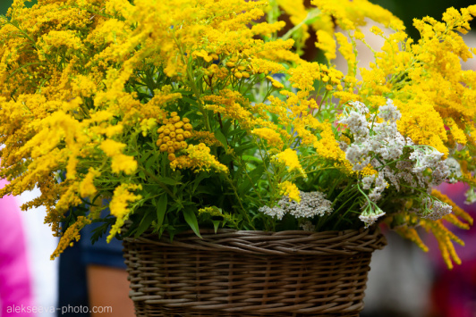
В Краснолесье 5 августа состоялся праздник «Соседи» и мастерская «Вкусы Виштынецкой возвышенности»
Начало августа на востоке Калининградской области часто ассоциируется с фестивалем «Соседи», который Виштынецкий эколого-исторический музей проводил в поселке Краснолесье с 2014 по 2019 год. Это праздник гостеприимства и дружеского общения людей, живущих рядом, влюбленных в свою землю. В этом году 5 августа после трехлетнего перерыва фестиваль «Соседи» снова порадовал жителей и гостей Калининградской области.

Праздник открыли с приветствием партнёры мероприятия, начальник Управления культуры Нестеровского муниципального округа Ирина Опрышко, авторы пректа "Вкусы Виштынецкой возвышенности" Юлия Бардун и Наталья Добровольская, настоятель православного храма святых мучеников Адриана и Наталии отец Олег Демьяненко, а также звонкие голоса участниц ансамбля «Подруги» из посёлка Гаврилово. Как обычно на территории Виштынецкого экомузея проходили разнообразные ремесленные и творческие мастерские, ярмарка местных продуктов. Можно было создать свой лесной сувенир с семьёй Уфимцевых, попробовать свои силы в изготовлении деревянной игрушки с Юрием Касьяненко, изделий из кожи вместе с Людмилой Кочуковой и создать украшение из атласных лент с Екатериной Крек, а также куколку-оберег с Терезой Моисеенко и Надеждой Раткевич. Вместе с участницами творческого объединения «Дом у Дуба» из города Нестеров участники праздника знакомились с техниками вязания, макраме (мастер Галина Филина), изготовлением сумок (мастер Татьяна Катаева) и украшений из природных материалов (мастера Ольга Нятина и Наталья Чавычалова). Гости праздника могли отправиться путешествовать к истокам реки Синей в сопровождении местного жителя Александра Дорошкина и совершить виртуальное путешествие в историю Виштынецкой возвышенности с директором музея Алексеем Соколовым. В выставочном зале музея наряду с выставкой художественных работ Виталия Хвалея работала мастерская «Хранители времени», которую организовали Валерий Гусаров и Сергей Проскуркин, представившие часы разных времён и познакомившие посетителей с мастерством их восстановления. Каждый участник независимо от возраста мог выбрать занятие по душе.
В Краснолесенском доме культуры в рамках праздника состоялась творческая мастерская «Поющие поколения» (организатор Ирина Ковардо). Это большой концерт с участием вокалистов и песенных коллективов со всей области, в котором звучали песни о любви и Родине на разных языках. В традиционной ярмарке приняли участие местные жители, друзья и соседи Краснолесья. Работала зелёная лавка Любови Сутягиной, кипели самовары и пеклись на огне вафли семьи Качновых, жарились драники Марины Рюмкиной, можно было приобрести выпечку, ягоды, и заготовки на зиму от местных хозяек Ольги Осиповой и Веры Матусевич, семьи Абраменко, пряники и сладости от Лены Уфимцевой и Анны Изенковой, рогатый пирог шакотис от подворья семьи Крикун, лапшу на перепелином бульоне и продукцию «Пугачёвской перепёлочки» семьи Михаила и Ольги Жевнеровичей, а также отведать душистый наваристый шюпинис Семьи Добровольских и блюда с сельским колоритом от ресторана «Балт» (г. Зеленоградск), ведь в этот раз праздник проводился совместно с проектом «Вкусы Виштынецкой возвышенности», авторами и организаторами которого являются Наталья Добровольская и Юлия Бардун.
Мастерская 5 августа проводилась в рамках проекта "Вкусы Виштынецкой возвышенности 2022: актуализации природного и культурного наследия востока Калининградской области через гастрономические практики", реализуемого при поддержке Президентского фонда культурных инициатив. В проекте участвуют многие местные жители, эксперты в области истории гастрономии, экологии, ботаники, сельского туризма и шеф-повара ведущих ресторанов локальной гастрономии в Калининградской области. «Вкусы Виштынецкой возвышенности» были представлены на празднике отдельной площадкой, которая начала свою работу уже ранним утром в здании бывшего РАЙПО, где шеф повар ресторана «Балт» (г. Зеленоградск) Ахмед Охунов провёл мастер-класс по приготовлению завтрака из местных продуктов. В этот день конференц-зал музея стал лекционной аудиторией, где географ Лариса Станченко рассказывала о том, почему нужно есть местные продукты, эколог Мария Кохановская о том, как можно использовать инвазивные виды растений в кулинарии. О том, какие полезные дары леса можно собирать и есть в августе, поведал директор Виштынецкого экомузея. Также организаторами проекта «Вкусы Виштынецкой Возвышенности» была представлена новая книга с рецептами местных блюд, которая скоро должна увидеть свет. А завершил праздник просмотр фильма «Клуб любителей книг и пирогов из картофельных очистков» в доме культуры Краснолесья. Виштынецкий экомузей и организаторы проекта «Вкусы Виштынецкой возвышенности» искренне благодарят всех участников праздника, партнёров, всех людей, которые в этот день, не страшась переменчивой погоды, приехали в Краснолесье, чтобы прожить этот день вместе, по-соседски, в дружеском общении.
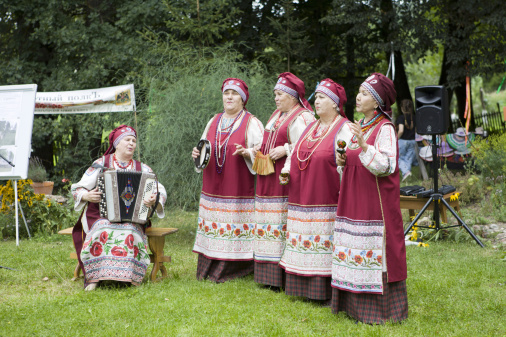
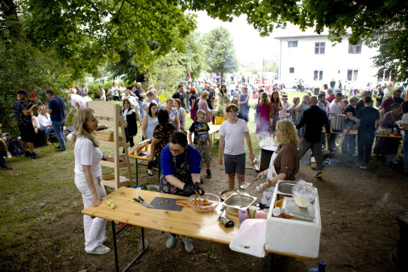
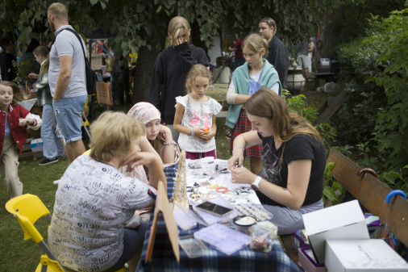
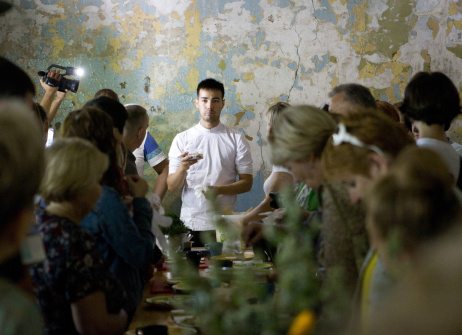
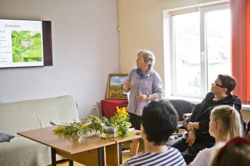
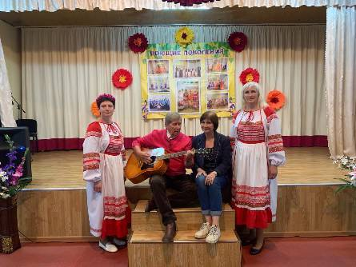
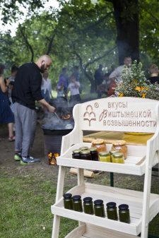
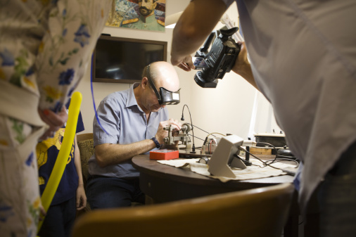
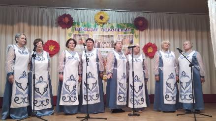
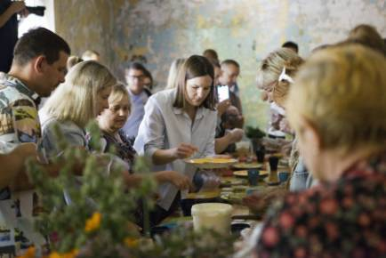
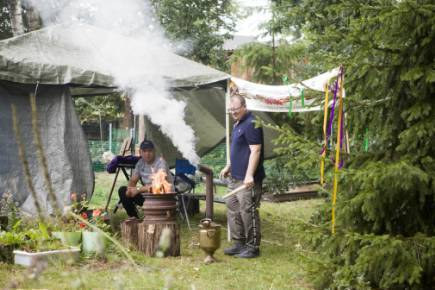
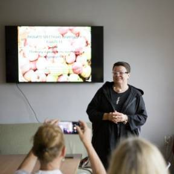
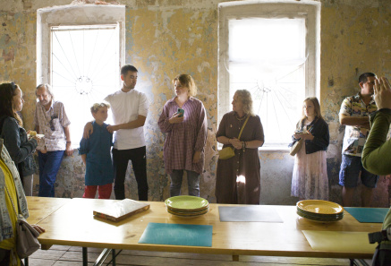
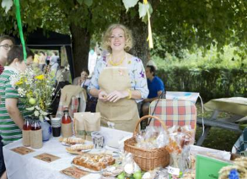
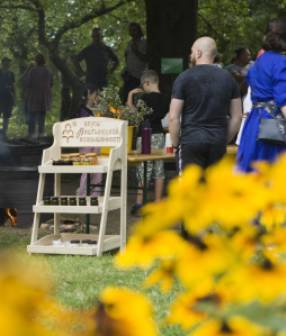
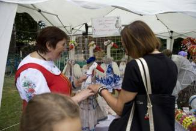
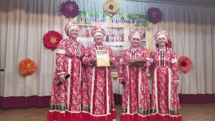
Фото: Наталья Матусевичене, Юлия Алексеева, Ирина Ковардо
5 августа 2023 г.